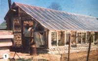
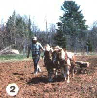
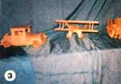

From Urbanites To Country Folk... In Just Eight Years
By James E. Strohauer
July/August 1984
The Strohauers have proved (once again) that it's really possible to make the transition...
We often ask ourselves why we didn't make our 3,800-mile move from smog-shrouded Denver and the stress of city living to the pure air of the Maine woods and simplicity of rural life 20 years sooner. The answer is probably that we hadn't yet read that borrowed copy of MOTHER ... the one that made us realize how unhappy we were with our urban lifestyle and gave us the inspiration to do something about it.
MOVING ON
When we finally did decide to make the move back to the land in July of 1976, we sold everything we owned except our camper, four-wheel-drive truck, and household goods. Fortunately, we had enough capital to get us started on our adventure ... plus professions that enabled us to earn some part-time income while devoting most of our time and energy to establishing our homestead. (My wife, Claudia-a registered nurse-works three nights a week at a local hospital, and I teach music as time allows and barter opportunities arise.)
One thing for sure: Our newly purchased 20-acre domain-four miles from the nearest store and 20 miles from "town"-was going to need some establishing. About all it boasted was a hunting camp (with no running water or electrical fixtures) and a stand of mixed trees (hardwood for fuel; pine, spruce, and fir for building; cedar for fence posts; and maple for syrup).
SETTLING IN
Even though I had been raised on a farm, I left it as soon as I came of age and, furthermore, had forgotten everything I ever knew about country life. What's more, Claudia had always been accustomed to modern conveniences. So, it was with considerable trepidation that we set about cleaning out the old dug-out well and installing a hand pump (about which I knew nothing), rewiring the cabin (about which I knew even less), laying in firewood, and making our domicile winter worthy."
It seemed that we spent that first winter just trying to keep warm-we split a lot of firewood-and figuring out how to "do more with less." In one effort to cut down on expenses, I made a few wooden toys for Christmas presents for our children, Mike and Michelle, who were then 12 and 9 years old.
Also, we struck our first barter when the fellow who helped me bring in the firewood offered us a barrel stove fabricated out of an old water heater in exchange for fuel for his woodburner. Since fireplace heat had turned out to be definitely unsatisfactory, this was a welcome addition to our home. That stove is still our main source of warmth.
1977
Our first encounter with Maine's mud season occurred that spring when our road (which is 7/10 of a mile from the main highway) became impassable. As a result, we had to haul everything in by backpack until the necessary improvements were made.
By then it was time to plan our garden ... but the vegetable patch had not been plowed in 20 years: It had sod a foot deep! As a neighborly gesture, the postmaster lent us his old tractor. However, after several days of struggling with the noisy, smoke-belching contraption, I decided there must be a better way to plow. Then I remembered that my father used real horsepower on his farm, and I thought, why not now? Draft horses were out of the question (our small acreage didn't warrant such big-and costly -creatures), so we opted for a team of ponies.
The acquisition of Chub and Patch has been by far our wisest investment since we've been farmsteading. Friendly old-timers have given us invaluable advice on managing the pair (harnessing, driving, hitching, etc.), and a shoemaker pal has kept our harnesses in good repair in trade for music lessons. The horses break sod (I drive, and Claudia walks-or runs-behind the plow), disk, spring tooth, cultivate, yard wood, and pull the wagon and sleigh. Best of all, it is a joy to work with animals instead of with smelly, gas-eating machinery.
Once the garden was planted, we obviously needed to think about shelter for our workhorses. With the help of a book on constructing pole buildings, we erected a 30' X 30' pole barn of board-and-batten. (The ponies even yarded out all the pine and spruce we needed for the project!) After the stable was completed, we added chickens and two goats to our barnyard family but soon discovered-to our sorrow-that goats were not for us. They tore down fences, broke barn windows, and ate everything that wasn't nailed down. (On top of that, we never did manage to breed them.) Consequently, we sold them and began saving money to buy a nice, gentle cow.
We also fixed up a little greenhouse on one side of an old shed that was still standing on the property ... and had such good luck with the seedlings it produced that we decided to make a bigger structure the next year Similarly, we were delighted with the produce we eventually harvested from that first-year garden (especially since we are vegetarians).
1978
That was a busy year because we had many plans to carry out on the farm place. First we built an 8' X 10' poly greenhouse for raising seedlings and grew so many starts that we were able to sell a few to the country store. We also started the exciting new venture of maple sugaring. We tapped 25 trees, and faithful Patch hauled their sap (on a little skid) to the stove.
Next we built a 10' X 40' addition to our camp house out of vertical spruce logs and chinked it with insulation and small fir saplings. We sought some professional wiring help this time and received the services of a friendly electrician in barter for guitar lessons I gave his son.
In addition, we bought 24 more wooded acres (bringing our total to 44) ... and Rosey, the milk cow, joined our livestock. I added to our coffers, too, by selling some of my wooden toy creations through a local craft outlet.
1979
In the spring we tapped 50 maple trees for a yield of 6-1/2 gallons of syrup ... enough for our needs, with some left over for Christmas presents. After that, we sold a new crop of seedlings from the greenhouse and planted our biggest garden ever.
Another swap developed when I helped a buddy tear down some old buildings in exchange for enough recycled lumber to build an 18' X 10' woodshed. For the first time, we cut pulp-60 cords of fir-to help with the farm expenses. And last (but certainly not least!) Rosey produced her first calf, thrilling us with the birth experience and all that milk and butter!
1980
Our new application for Tree Farm status brought the state forester out to teach us how to manage our woodlot. He showed us how to weed the gray birch from our pine forest lot and how to prune the growing stock.
Furthermore, we continued to get some income from selling our own pulp and firewood ... the ponies earned enough money to pay for their hay by yarding 20 cords of pulp for a friend down the road ... we sold surplus garden produce to the local market ... and the children raked blueberries on neighboring farms to help buy their school clothes.
Once the fall firewood was cut, I went into toy making in earnest, buying a new belt sander and selling the playthings to a gift shop. That winter we also began braiding a rug (made from old clothes garnered from garage sales) to cover our 10' X 20' living room floor.
1981
That was our best sugaring season yet: 11 gallons of syrup! We increased the size of our poly greenhouse to 10' X 20' but also came to the conclusion that we needed a more permanent indoor growing space. Since we'd always been great admirers of Scott and Helen Nearing-who lived within driving distance-we visited them to inspect their famous greenhouse. (The Nearings wrote a book about it: Building and Using Our Sun-Heated Greenhouse.) When we returned home from that inspiring trip, we immediately began collecting rocks for our new 10' X 40' stone-and-glass plant house.
That year a fancy new sign at our farmstead entrance announced that we were bona fide Tree Farmers. And for the first time, I bought some finished hardwood wheels to speed up my toy production for the Christmas market.
1982
The seedlings started indoors during the latter part of that February were transferred to our new passive solar greenhouse in mid March. (The building is equipped with a stove for sub-zero nights.) We had banner sales of the starts but realized that we could do even better if we added flowering bedding plants to our inventory.
The ponies yarded another 20 cords of pulp and 10 cords of firewood for our neighbor, who has been so impressed with their performance that he now says he may buy his own team! We've tried to discourage him, though. (Otherwise, Chub and Patch won't be able to earn their hay!)
1983
Although our vegetable seedlings continued to sell well, we didn't start the bedding plants early enough for the flower enterprise to be fully successful. We added a strawberry patch and an asparagus bed to the garden ...and the apple and cherry trees we planted years ago finally began to produce. There was no new construction in 1983, but we do plan to build a sugarhouse in the near future.
1984 UPDATE
Mike and Michelle are away in school now, but they both help us with various projects (such as splitting wood) when they're home. Since our nest is now empty most of the time, Claudia and I have become licensed foster parents and eagerly look forward to meeting our first "new" child.
As a result of last spring's experience, we sowed bedding plants in mid-January so we could have blooms for sale by Mother's Day. Since the unseasonably cold winter kept us from opening the greenhouse that early, we had wall-to-wall growing flats in our house.
The toy business is going so well (over $2,000 in sales in 1983) that I'm working overtime to produce enough stock for a series of summer craft shows, store outlets-including a Boston department store!-and the 1984 Christmas season.
Despite her new responsibilities as a nursing supervisor, Claudia finds time to sew all of Michelle's dresses, make butter and cottage cheese, and design Christmas tree ornaments to sell during the holidays. (By the way, the rug we started braiding in 1980 is still in progress. We should be able to finish it up as soon as we get some more wool discards this summer.)
Looking back, we have to agree that our rural homestead has been worth all the hard work and the sacrifices through the years. We now eat 75% off the land ... swim, backpack, and canoe in our spare time ... relax on our front porch in the quiet of the evening while listening to the haunting cry of the loon from a nearby lake ... and revel in the fulfilling, self-reliant lifestyle we have created for ourselves-in just eight years.
|
 The author proudly shows off the new stone-and-glass, sun-heated greenhouse that he and his family built after viewing the Nearings' structure firsthand in 1981. |
 Chub and Patch, the pony team, perform one of their many tasks around the homestead. |
 [3] These are a few examples of the wooden playthings that Jim produces in his home workshop to fill the rapidly expanding demand for his creations. |
 [4] The Strohauers' first major construction effort was this 30' X 30' pole barn built in 1977 to house their workhorses. |
|
|